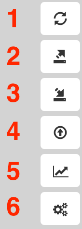

- Refresh - BloodHound will re-calculate and re-draw the current display.
- Export Graph - BloodHound can export the currently drawn graph to JSON format, or as a a PNG.
- Import Graph - BloodHound will draw an imported graph in JSON format.
- Upload Data - BloodHound will automatically detect and then ingest CSV formatted data. For more information on this, see CSV ingestion.
- Change Layout Type - Toggle between hierarchical (dagre) and force directed graph layouts.
- Settings - Alter node collapse behavior, and switch between low detail mode.